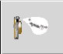
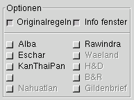

Grundwerte

Zurück zur Vorseite
Die Buttonleiste im Fenster "Grundwerte":
(Mit der Maus auswählen)

zum Seitenanfang
Obere Button-Zeile:
Die obere Buttonzeile beherbergt die grundlegenden Steuerfunktionen des MCG:

Neuer Charakter:
Anlegen eines neuen Charakters.
Alle Werte werden zurückgesetzt.
zur Buttonleiste

Charakter speichern:
Den aktuellen Stand in der Datenbank abspeichern.
Das Abspeichern geschieht
im Normalfall automatisch.
zur Buttonleiste

Charakter Laden:
Einen Charakter aus der Datenbank laden.
zur Buttonleiste

LaTeX-Charakterblatt:
Es wird eine LaTeX-Ausgabe des Charakterdokuments des aktuellen Charakrters erzeugt und in eine
Postscript-Datei umgewandelt. Diese wird mittels 'gv' angezeigt. Das Dokument kann von dort aus
gedruckt und gespeichert werden.
zur Buttonleiste

Hilfe:
Die Online-Hilfe wird angezeigt.
zur Buttonleiste

Info:
Eine kurze Info zum MCG
zur Buttonleiste

Schließen:
Beendet den MCG
Änderungen werden automatisch gespeichert
zur Buttonleiste
Untere Button-Leiste:
In der unteren Buttonleiste werden die grundlegenden Eigenschaften des Charakters
festgelegt:

Grundwerte Würfeln:
Auswürfeln der Grundwerte:
Stärke, Geschicklichkeit, Konstitution, Intelligenz und Zaubertalent
zur Buttonleiste

Abgeleitete Werte:
Auswürfeln und berechnen der abgeleiteten Werte.
zur Buttonleiste

Werte editieren:
Es öffnet sich ein Fenster, in welchem die Grundwerte, sowie andere Charaktereigenschaften
manuel verändert werden können.
zur Buttonleiste

Herkunftsland wählen:
Es Öffnet sich ein Fenster, in welchem das Herkunftsland des Charakters ausgewählt werden kann.
zur Buttonleiste

Muttersprache wählen
Es Öffnet sich ein Fensterm in dem die Muttersprache(n) ausgewählt werden können.
zur Buttonleiste

Charakter Beschreibung:
Es öffnet sich ein Fenster, in welchem eine Beschreibung des Charakters eingegeben werden kann.
zur Buttonleiste
Auswahlzeile:

Charaktertyp auswählen:
Über dieses Menü wird der Charaktertyp ausgewählt (Voreingestellt: Assasine).
zur Buttonleiste

Spezies auswählen:
Über dieses Menü wird die Spezies ausgewählt (Voreingestellt: Mensch).
zur Buttonleiste
Optionen:

- Über die Optionen kann lassen sich die verschiedenen Regelmodule hinzu- oder abwählen.
- Ist die Option 'Originalregeln' aktiviert (Voreinstellung), so sind nur die Regeln der Origingalregelwerke
und der offiziellen Regionalmodule verfügbar.
- Ist die Otpion 'Originalregeln' deaktiviert, so werden auch inofizielle Regelerweiterungen anwählbar.
- Nichtanwählbare Komponenten erscheinen in 'Geisterschrift'.
zum Seitenanfang
Wertefenster:

Im Werte-Fenster werden die bereits gesetzten Werte angezeigt. Die Felder, für die noch keine Werte
vorhanden sind. bleiben leer.
zum Seitenanfang